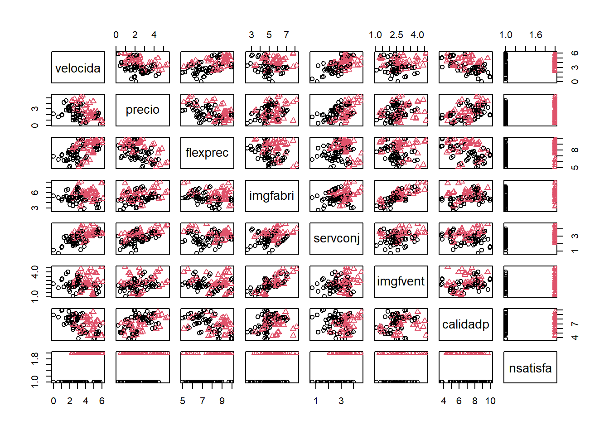

9.2 Regresión logística
9.2.1 Ejemplo
Como ejemplo emplearemos los datos de clientes de la compañía de distribución industrial (Compañía Hair, Anderson y Tatham).
load("datos/hatco.RData")
as.data.frame(attr(hatco, "variable.labels"))## attr(hatco, "variable.labels")
## empresa Empresa
## tamano Tamaño de la empresa
## adquisic Estructura de adquisición
## tindustr Tipo de industria
## tsitcomp Tipo de situación de compra
## velocida Velocidad de entrega
## precio Nivel de precios
## flexprec Flexibilidad de precios
## imgfabri Imagen del fabricante
## servconj Servicio conjunto
## imgfvent Imagen de fuerza de ventas
## calidadp Calidad de producto
## fidelida Porcentaje de compra a HATCO
## satisfac Satisfacción global
## nfidelid Nivel de compra a HATCO
## nsatisfa Nivel de satisfacciónConsideraremos como respuesta la variable nsatisfa y como variables explicativas el resto de variables continuas menos fidelida y satisfac. Eliminamos también la última fila por tener datos faltantes (realmente no sería necesario).
datos <- hatco[-100, c(6:12, 16)]
plot(datos, pch = as.numeric(datos$nsatisfa), col = as.numeric(datos$nsatisfa))
9.2.2 Ajuste de un modelo de regresión logística
Se emplea la función glm seleccionando family = binomial (la función de enlace por defecto será logit):
modelo <- glm(nsatisfa ~ velocida + imgfabri , family = binomial, data = datos)
modelo##
## Call: glm(formula = nsatisfa ~ velocida + imgfabri, family = binomial,
## data = datos)
##
## Coefficients:
## (Intercept) velocida imgfabri
## -10.127 1.203 1.058
##
## Degrees of Freedom: 98 Total (i.e. Null); 96 Residual
## Null Deviance: 136.4
## Residual Deviance: 88.64 AIC: 94.64La razón de ventajas (OR) permite cuantificar el efecto de las variables explicativas en la respuesta (Incremento proporcional en la ventaja o probabilidad de éxito, al aumentar una unidad la variable manteniendo las demás fijas):
exp(coef(modelo)) # Razones de ventajas ("odds ratios")## (Intercept) velocida imgfabri
## 3.997092e-05 3.329631e+00 2.881619e+00exp(confint(modelo))## Waiting for profiling to be done...## 2.5 % 97.5 %
## (Intercept) 3.828431e-07 0.001621259
## velocida 2.061302e+00 5.976208357
## imgfabri 1.737500e+00 5.247303813Para obtener un resumen más completo del ajuste también se utiliza summary()
summary(modelo)##
## Call:
## glm(formula = nsatisfa ~ velocida + imgfabri, family = binomial,
## data = datos)
##
## Deviance Residuals:
## Min 1Q Median 3Q Max
## -1.8941 -0.6697 -0.2098 0.7865 2.3378
##
## Coefficients:
## Estimate Std. Error z value Pr(>|z|)
## (Intercept) -10.1274 2.1062 -4.808 1.52e-06 ***
## velocida 1.2029 0.2685 4.479 7.49e-06 ***
## imgfabri 1.0584 0.2792 3.790 0.000151 ***
## ---
## Signif. codes: 0 '***' 0.001 '**' 0.01 '*' 0.05 '.' 0.1 ' ' 1
##
## (Dispersion parameter for binomial family taken to be 1)
##
## Null deviance: 136.42 on 98 degrees of freedom
## Residual deviance: 88.64 on 96 degrees of freedom
## AIC: 94.64
##
## Number of Fisher Scoring iterations: 5La desvianza (deviance) es una medida de la bondad del ajuste de un modelo lineal generalizado (sería equivalente a la suma de cuadrados residual de un modelo lineal; valores más altos indican peor ajuste). La Null deviance se correspondería con un modelo solo con la constante y la Residual deviance con el modelo ajustado. En este caso hay una reducción de 47.78 con una pérdida de 2 grados de libertad (una reducción significativa).
Para contrastar globalmente el efecto de las covariables también podemos emplear:
modelo.null <- glm(nsatisfa ~ 1, binomial, datos)
anova(modelo.null, modelo, test = "Chi")## Analysis of Deviance Table
##
## Model 1: nsatisfa ~ 1
## Model 2: nsatisfa ~ velocida + imgfabri
## Resid. Df Resid. Dev Df Deviance Pr(>Chi)
## 1 98 136.42
## 2 96 88.64 2 47.783 4.207e-11 ***
## ---
## Signif. codes: 0 '***' 0.001 '**' 0.01 '*' 0.05 '.' 0.1 ' ' 1